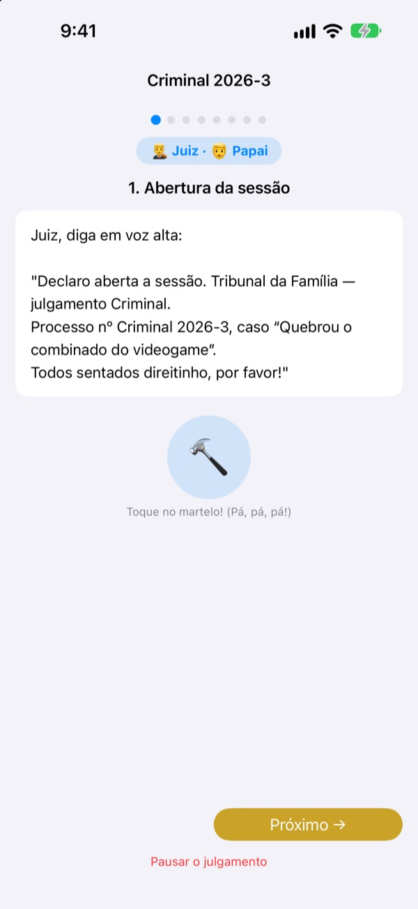
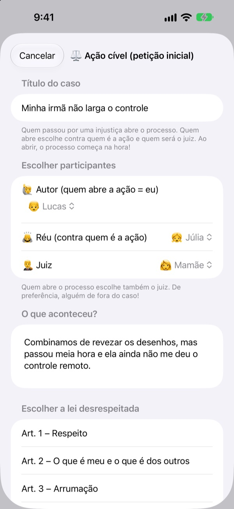
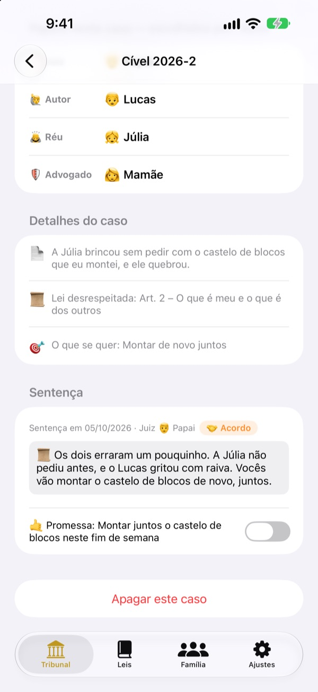
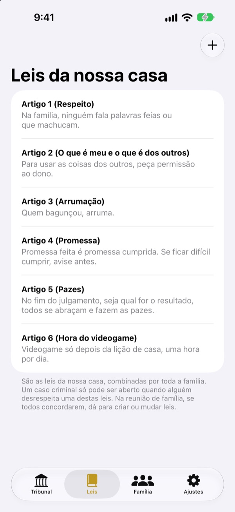

Foi injusto?
Nada de choro, vamos ao tribunal.
Seu filho entra com a ação como autor, e a família divide os papéis de juiz e advogado. Em cada etapa, um roteiro diz de quem é a vez e o que falar, então até o primeiro julgamento corre como um de verdade.
Sem anúncios, sem compras, sem cadastro. Tudo fica neste aparelho.

Faça um julgamento
Um caso rápido: "Meu irmãozinho não me dá o controle remoto." Troque o nível das palavras lá em cima, bata o martelo e ligue o timer. Tem som, confira o volume.
"Foi ele que começou!" Cansado de ser sempre o juiz?
Quando sai briga, quase sempre é um adulto que decide. Quem perde chora porque acha injusto, e quem ganha não sabe bem por quê. O Tribunal da Família dá às crianças uma ordem a seguir: contar o seu lado inteiro e ouvir o outro até o fim. E a sentença termina com uma promessa, não só com um castigo.
Quem se sente injustiçado entra com a ação
Quem acha algo injusto vira autor e entra com a ação. Contra quem, e quem vai ser o juiz, quem decide é quem processa. As crianças podem até processar o pai e a mãe.
Viu alguém quebrar uma regra da casa? Vire promotor e abra um caso criminal. Só pode ser juiz quem não é autor nem réu.

A sentença termina com uma promessa
Junto com a sentença vem uma promessa ou pena, marcada quando for cumprida. Os casos encerrados viram os casos julgados da família.
As penas sugeridas começam por consertar e fazer as pazes, mais reparação do que castigo. Cortar videogame ou TV fica por último.

A casa é sua, as leis também
Escrevam como artigos as regras combinadas em família, como respeito, arrumar a bagunça e cumprir promessas, e acrescentem ou mudem quando quiserem. Na ação, escolhe-se a lei que foi quebrada.
"Aprender sobre o tribunal" explica o que fazem o juiz, o autor, o promotor e o advogado, e como corre um julgamento.

Comece em três passos
- 1
Adicione a família
Um nome e um emoji bastam. Sem conta.
- 2
Abra um caso
Injustiça? Cível. Regra da casa quebrada? Criminal. Depois escolha o juiz.
- 3
Abra a sessão
Siga o roteiro, controle o tempo com o timer e anuncie a sentença com o martelo.
Palavras que crescem com seu filho
- Juiz
- Fácil: Árbitro · Termos jurídicos: Juiz presidente
- Autor
- Fácil: Quem reclama · Termos jurídicos: Autor
- Réu
- Fácil: Quem responde · Termos jurídicos: Réu
- Promotor
- Fácil: Quem avisou · Termos jurídicos: Promotor
- Acusado
- Fácil: Quem responde · Termos jurídicos: Acusado
- Advogado
- Fácil: Ajudante · Termos jurídicos: Advogado
- Cível
- Fácil: Injustiça · Termos jurídicos: Cível
- Criminal
- Fácil: Promessa quebrada · Termos jurídicos: Criminal
Escolha o nível das palavras em Ajustes e as palavras da tela e do roteiro mudam juntas. Experimente Fácil para a educação infantil e Padrão para o ensino fundamental.
Perguntas frequentes
A partir de que idade?
Qualquer criança que saiba ler pode brincar com um adulto. Com o roteiro, as dicas e o nível Fácil, os menores também participam se um adulto ler em voz alta.
É grátis mesmo?
Sim. Sem anúncios e sem compras que liberem funções. Em Ajustes há uma gorjeta opcional para apoiar o desenvolvedor, que não libera nem bloqueia nada.
Precisa de internet?
Não. Julgamentos e registros funcionam totalmente offline. Só para enviar feedback pelos Ajustes é preciso internet e entrar no iCloud.
Onde ficam os registros?
Família, leis, julgamentos e sentenças ficam só no aparelho e não vão para nenhum servidor. O desenvolvedor recebe apenas o feedback que você mesmo envia e estatísticas de uso anônimas que não identificam você.
Dá para fazer backup ou passar para outro aparelho?
Use "Salvar registros" em Ajustes para exportar tudo para um arquivo e "Carregar registros" no outro aparelho para ter tudo de volta igualzinho. Backups da antiga versão web também carregam.
Funciona no iPad?
Sim, no iPhone e no iPad. Uma tela grande é ótima com a família toda em volta.
E se as penas ficarem pesadas demais?
Quando o promotor pede uma pena, o roteiro lembra que ela não deve ser pesada demais e precisa ser possível de cumprir. As penas sugeridas começam por reparar: consertar, fazer as pazes, se colocar no lugar do outro.
Como apago tudo?
Ao apagar o app, todos os registros do aparelho somem junto. Nada nunca saiu dele, então nada fica guardado em outro lugar. Para apagar um feedback enviado, mande um e-mail.
Bugs, ideias ou qualquer outra coisa? Escreva para leeo@kakao.com. Também dá para enviar feedback pelos ajustes do app.